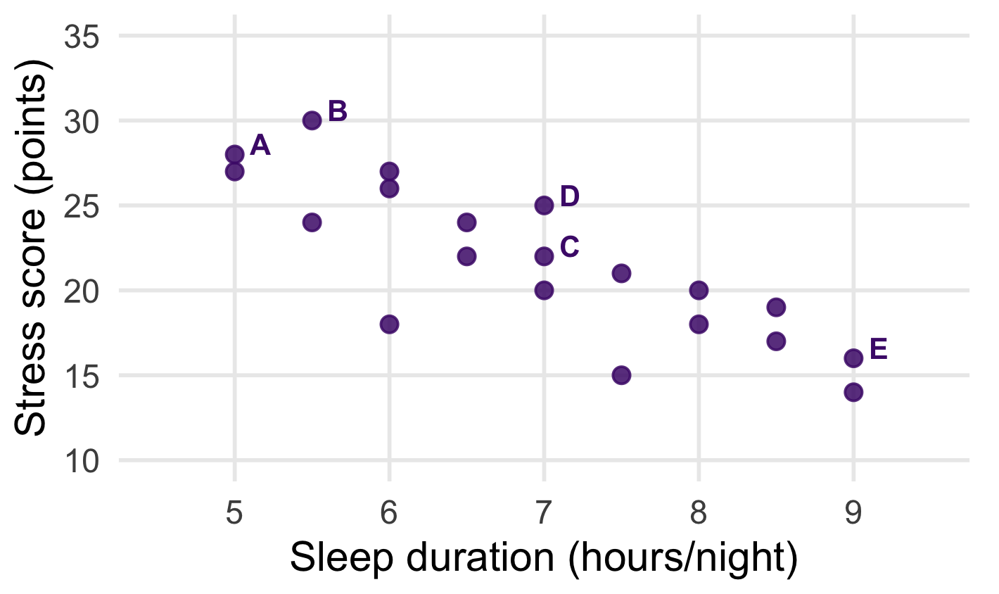
Scatterplots and Correlation
APHS 20203
Does More Sleep Go With Less Stress?
Research Question
- Imagine a campus wellness team asks 20 students about sleep and stress during the same week.
- Research Question: Do students who report more sleep also report less stress?
Consider
- What data would we want to begin to address this research question?
One Row, One Student
| Student | Sleep (hours/night) | Stress (points) |
|---|---|---|
| S01 | 5.0 | 28 |
| S02 | 7.0 | 22 |
| S03 | 6.0 | 26 |
| S04 | 8.0 | 18 |
Questions to Consider
- What numerical or graphical summaries could we use to investigate whether sleep and stress are associated?
- What would we expect to see if sleep and stress are associated?
Graphical Summaries of Two Numerical Variables: Scatterplots
Summarize with a Scatterplot
Each point is one student.
- Student S01:
- Sleep = 5.0
- Stress = 28
- Student S02:
- Sleep = 7.0
- Stress = 22
Four Things to Look For
- Direction: upward, downward, or neither?
- Strength: how closely do points follow a pattern?
- Form: approximately straight or curved?
- Unusual observations: does a point stand apart?
Direction of the Relationship
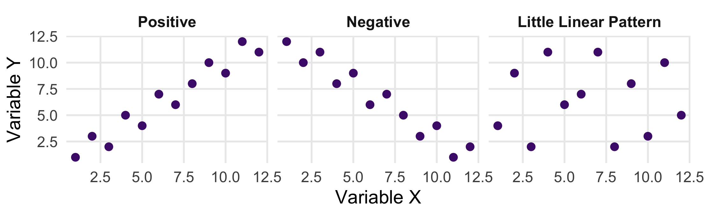
Positive: higher X tends to accompany higher Y.
Negative: higher X tends to accompany lower Y.
Four Things to Look For
- Direction: upward, downward, or neither?
- Strength: how closely do points follow a pattern?
Strength of the Relationship
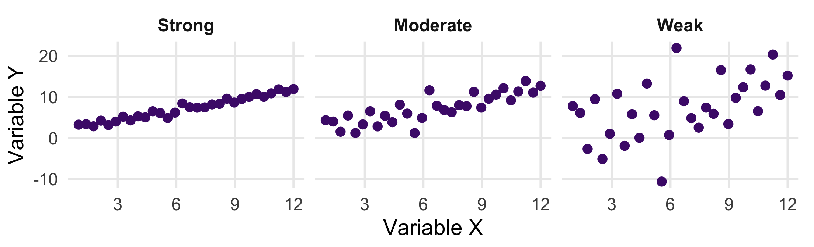
All three have the same underlying slope. They differ in how tightly the points cluster around it.
Question: Which Relationship Is Stronger?
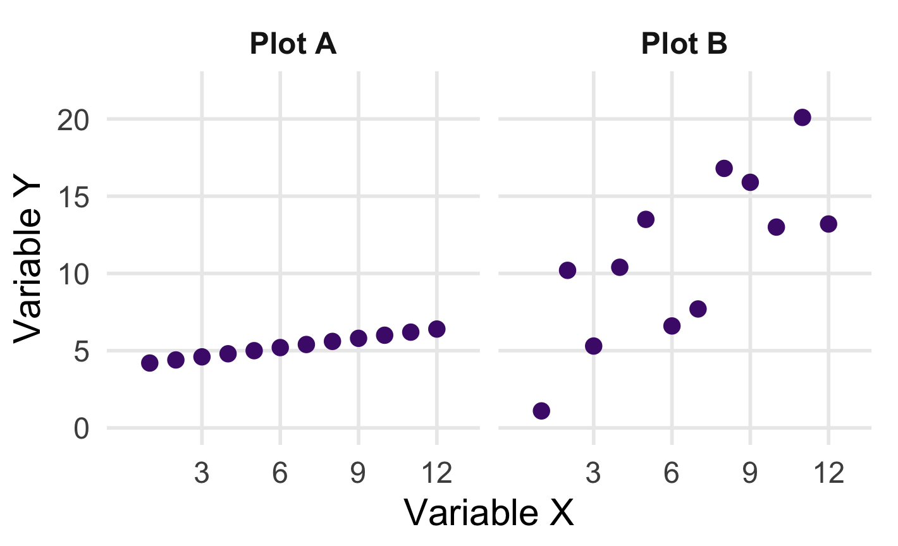
Which shows a stronger linear relationship?
A. Plot A
B. Plot B
C. Both are equally strong
D. Cannot tell from the plots
Choose one and explain why.
Four Things to Look For
- Direction: upward, downward, or neither?
- Strength: how closely do points follow a pattern?
- Form: approximately straight or curved?
A Relationship Can Be Nonlinear
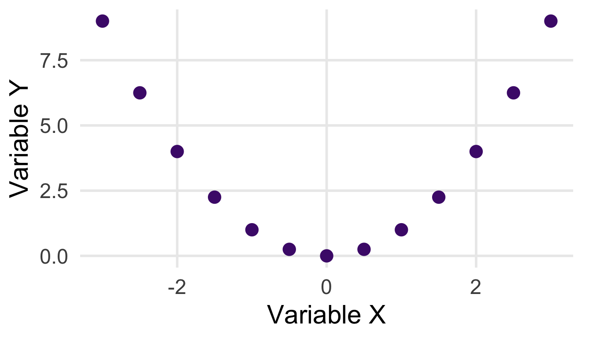
This U-shaped pattern is one example of a nonlinear relationship. Other patterns may rise and then fall, or level off.
Four Things to Look For
- Direction: upward, downward, or neither?
- Strength: how closely do points follow a pattern?
- Form: approximately straight or curved?
- Unusual observations: does a point stand apart?
Unusual Observations
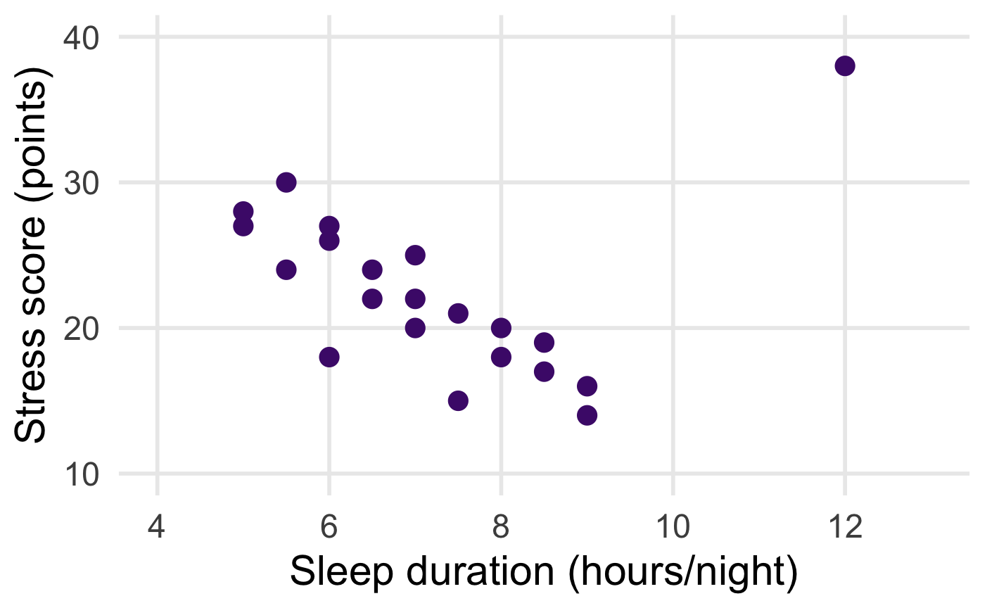
- Which observation stands apart from the overall pattern?
- What would you want to check?
Four Things to Look For
- Direction: upward, downward, or neither?
- Strength: how closely do points follow a pattern?
- Form: approximately straight or curved?
- Unusual observations: does a point stand apart?
Numerical Summaries of Two Numerical Variables
Pearson’s Correlation Coefficient
r ranges from −1 to +1.
| Feature | Interpretation |
|---|---|
| Sign | Direction of the linear relationship |
| Absolute value | Strength of the linear relationship |
| Near −1 or +1 | Points lie close to a straight line |
| Near 0 | Little linear relationship |
Question: Which Relationship Is Strongest?
Consider these correlation coefficients:
A. r = +0.35
B. r = −0.80
C. r = +0.60
D. r = −0.10
Similar r, Different Patterns
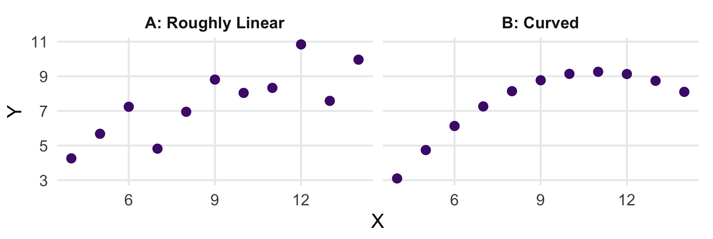
Both have r ≈ 0.816. A single coefficient does not show the shape.
One Observation Can Change r
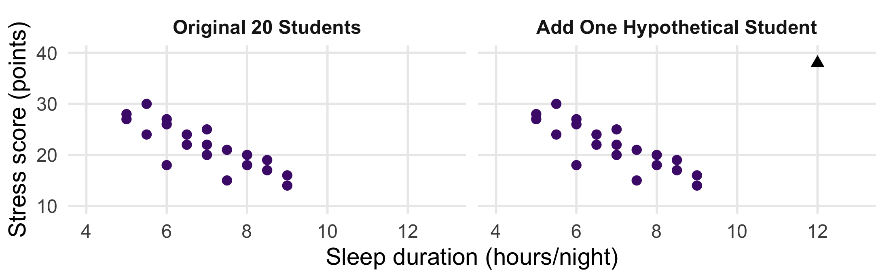
Original r = -0.834. With the added observation, r = -0.077.
Read a Correlation Matrix
| Sleep | Stress | Screen Time | |
|---|---|---|---|
| Sleep | 1.00 | -0.83 | -0.70 |
| Stress | -0.83 | 1.00 | 0.86 |
| Screen Time | -0.70 | 0.86 | 1.00 |
- Find the intersection of the two variables.
- The diagonal is 1.00.
- Values repeat across the diagonal.
Compare the Correlations
| Sleep | Stress | Screen Time | |
|---|---|---|---|
| Sleep | 1.00 | -0.83 | -0.70 |
| Stress | -0.83 | 1.00 | 0.86 |
| Screen Time | -0.70 | 0.86 | 1.00 |
In these data, which pair has the strongest linear relationship, and in what direction?
Interpreting and Applying Correlation
Correlation and Causation
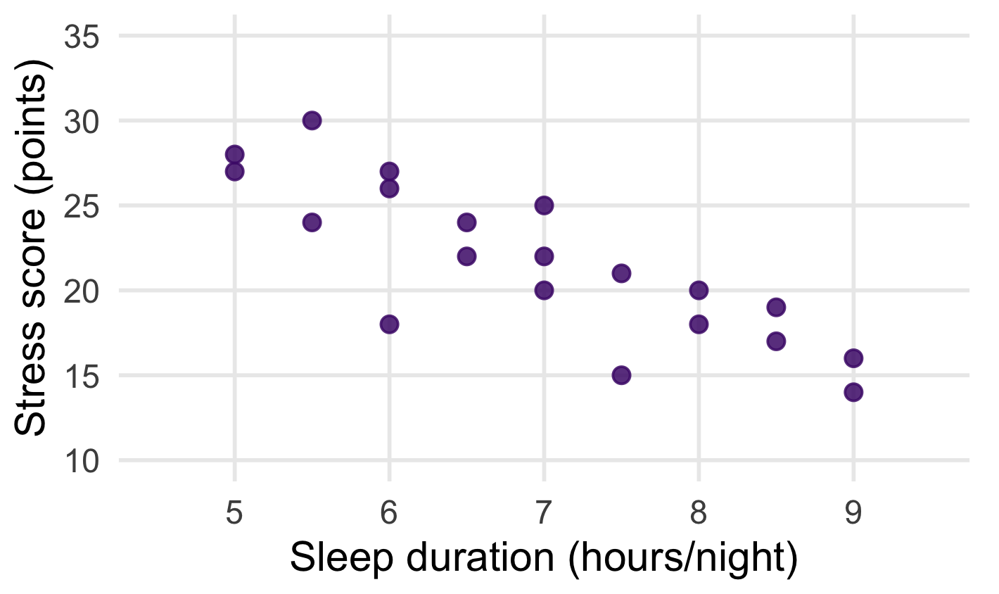
Students who sleep more might report less stress because:
- Sleep affects stress.
- Stress affects sleep.
- Workload or another factor affects both.
Predicting Stress

Now, suppose we want to predict a student’s stress score.
Without knowledge of their sleep duration, what is our best prediction?
Predicting Stress With the Mean
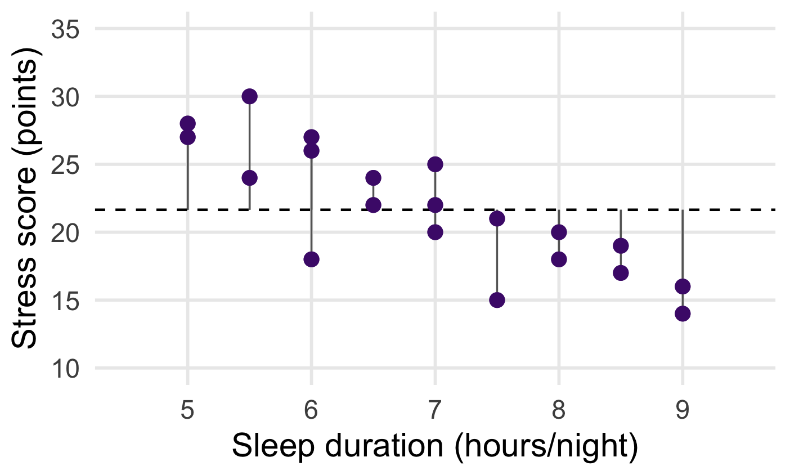
Without using sleep, our best prediction is the mean stress score for everyone:
21.65 points.
Each vertical segment shows an observed score’s distance from that prediction.
Predicting Stress With Sleep
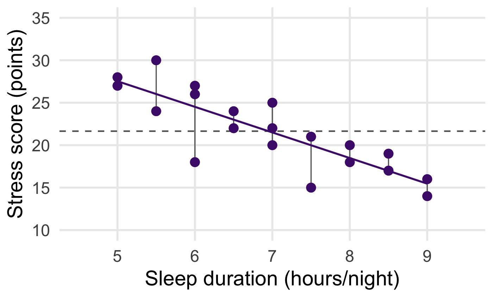
The regression line predicts stress using sleep duration.
The vertical segments now show errors relative to the line.
From r to r²
r², the coefficient of determination, measures the proportion of variation accounted for by the regression line.
| Prediction | Sum of Squared Errors |
|---|---|
| Mean only | 404.55 |
| Regression line | 122.99 |
Using sleep reduces the sum of squared errors by 69.6% compared with using the mean alone.
For simple linear regression with an intercept, this also equals Pearson’s r squared.
Why We Can Square r
For ordinary least-squares regression:
- Simple means one predictor: sleep duration.
- With an intercept means the line can shift up or down instead of being forced through (0, 0).
Under these conditions, both calculations give the same r²:
Square the correlation
Compare squared errors
r retains direction. r² describes the proportion of variation accounted for by the line.
Open the Practice Workbook
Download correlation_practice.xlsx and open Practice.
| Column | Contents |
|---|---|
| A | Student identifier |
| B | Sleep duration, hours/night |
| C | Fictional stress score, points |
| D | Screen time, hours/day |
Use B and C today. Data occupy rows 2–21.
Select the Paired Data
- Select B1:C21, including both headers.
- Keep sleep_hours on the left and stress_score on the right.
- Exclude the student identifier, screen time, and calculation cells.
One row supplies one X-Y pair. Keep those rows together.
Insert an XY Scatterplot
- Choose Insert → Scatter (X, Y).
- Select markers only, with no connecting lines.
- Move the chart into the open space below the instructions.
The horizontal axis should represent sleep duration. The observed values range from 5 to 9 hours, but Excel may display a wider axis range, such as 0–10.
Give the Chart Meaningful Labels
Use Chart Design → Add Chart Element → Axis Titles, or the chart’s equivalent controls.
- Title: Sleep Duration and Stress Score.
- Horizontal axis: Sleep duration (hours/night).
- Vertical axis: Fictional stress score (points).
Check the point at 5 hours and 28 points against the first data row.
Check the Graph Before Interpreting It
- Did Excel use B2:B21 for X and C2:C21 for Y?
- Are both ranges numeric and the same length?
- Does the downward pattern match the paired data?
- Are the title, labels, and points readable?
For Prep 3, a labeled scatterplot and visual description are enough.
Group Exercise: Describe the Relationship
Work together for 8 minutes:
- Finish your scatterplot in Practice.
- Write 2–3 bullets about direction, apparent strength, and possible outliers.
- Check whether the pattern is approximately linear.
- Be ready to explain one point and one overall feature.
Choose an Excel operator, a range checker, and an interpreter.
Practice Graph
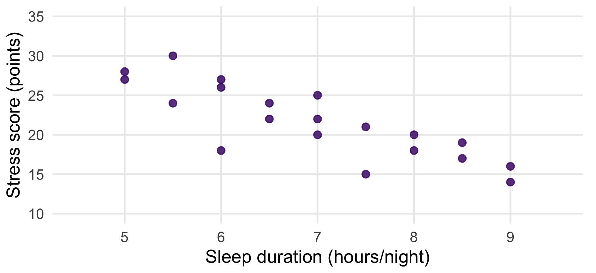
Compare Your Interpretations
- Students reporting more sleep generally report lower stress scores.
- The downward pattern is fairly strong and approximately linear, with some scatter.
- The point at 6 hours and 18 points sits below nearby observations and is worth checking.
We cannot tell from appearance alone whether a point is an error.
Calculate r in Excel
In G3 on Practice, enter:
Result: r = -0.834.
More sleep accompanies lower stress in this sample, with a fairly strong negative linear relationship.
Calculate r² and Check n
| Cell | Formula | Result |
|---|---|---|
| G4 | =G3^2 |
0.696 |
| G5 | =COUNT(B2:B21) |
20 |
About 69.6% of the variation in stress scores is accounted for by the linear relationship with sleep.
Compare With the Answer Key
Answer Key contains:
- The original practice observations.
- An editable scatterplot linked to its data.
- Formulas for r, r², and the number of observations.
- An example visual interpretation.
If your result differs, check the ranges and row pairing first.
Apply the Workflow to Prep 3
Use your assigned dataset A–D, with the assigned pair:
| Groups | X: Correlation Predictor | Y: Continuous Outcome |
|---|---|---|
| 1, 3, 5, 7 | SleepHours | StressScore |
| 2, 4, 6, 8 | ScreenTimeHours | AnxietyScore |
Create a labeled scatterplot and write 2–3 descriptive bullets.
Prep 3 Submission Check
- Group number, dataset, names, and assigned-variable classifications.
- Outcome n, mean, SD, minimum, and maximum.
- Labeled histogram with 3–4 descriptive bullets.
- Labeled scatterplot with 2–3 descriptive bullets.
- Each member’s 3–5-sentence contribution paragraph.
One group document: 1–2 pages excluding graphs, named Group#_Prep3.
Sources
- Yan Zhang. Correlations and Reliability, APHS 20203. Adapted correlation concepts and activities, PDF pages 3–21.
- APHS 20203. Approved remaining-course outline and Group Presentation - Prep 3.
- Microsoft Support: Scatter charts and CORREL.
- Penn State STAT 501: Coefficient of determination.
- F. J. Anscombe (1973). Graphs in Statistical Analysis. Datasets I and II supplied in R’s
datasets::anscombe.
The sleep, stress, and screen-time observations are fictional teaching data.